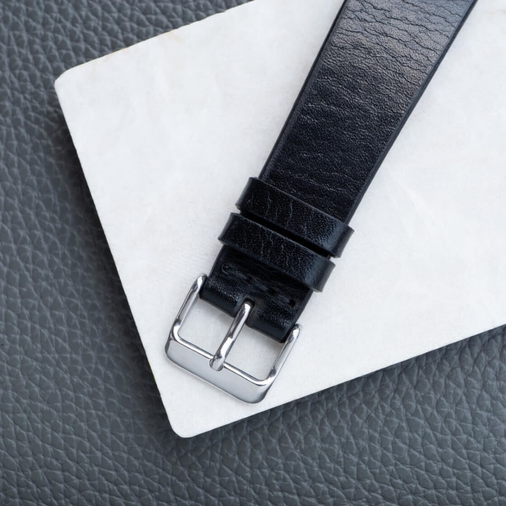

The Strap Episode: Fratello On Air on Pairing, Brands, Trends, Hidden Gems, and Tips
In the latest Fratello On Air podcast episode, hosts Mike and Balazs tackle a listener question: "Where and how do I find and identify good watch straps?" It is a really good question, and one that prompted the Fratello team to realize that what seems obvious to those deep in the watch hobby is not always clear to everyone. So, Mike and Balazs have dedicated an entire episode to the wonderful (and complicated) world of watch straps.
 Nenad Pantelic • May 23, 2025
Nenad Pantelic • May 23, 2025

They are covering:
- Their Favorite Brands: Mike and Balazs are naming names. From Italian artisans to industry staples and even some bespoke makers, they share who they trust for quality, style, and value.
- The Evolution of Strap Trends: Remember those super thick, chunky straps? The hosts discuss how tastes have shifted towards more refined, tapered, and elegant profiles.
- The Art of Pairing: This is where the magic happens :) How do you choose the right strap to complement your watch? Mike and Balazs talk colors (get ready for some surprising recommendations like military green and burgundy), textures, and what works best for different watch styles.
- Practicalities & Preferences: Thin vs. padded? Pin buckles vs. deployant clasps? And what about the quick-release spring bars? The duo debates the pros and cons.
- Quality vs. Cost: Can you really find a great leather strap for $20? They share their honest thoughts on what to expect at different price points.
Listen on Spotify
Listen on Apple Podcats
There are some nuggets in their discussion. One specific tip from Balazs really caught my attention and has me eager to dig deeper: his advice for nylon NATO users to "be careful and put a sticker on the back to protect the case back from getting kind of scratched by the nylon NATO."
I've never heard it before 🤔
All in all, this was a fun listen, and I enjoyed it very much. Listen now on Spotify, Apple Podcast, or wherever you get your podcasts.
And of course, check out Balasz's impressive collection of over forty in-depth reviews on Fratello, all under the Watch Strap Reviews topic.